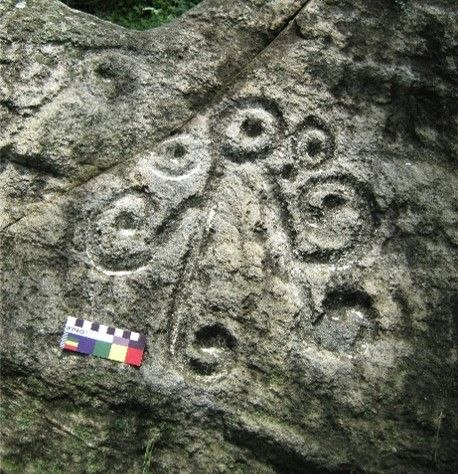

Bienvenido a un espacio dedicado a la memoria ancestral del Municipio San Diego.

Esta página nace para poner en valor el Yacimiento Arqueológico La Cumaca, un territorio donde la historia prehispánica sigue viva a través de sus petroglifos. Nuestro propósito es que habitantes y visitantes redescubran estos tesoros de arte rupestre y se sumen a la tarea de proteger este legado para las próximas generaciones. Aquí podrás explorar los petroglifos de cuatro estaciones clave del yacimiento, a través de fichas descriptivas. Progresivamente, incorporaremos al registro más petroglifos hasta completar el patrimonio local.